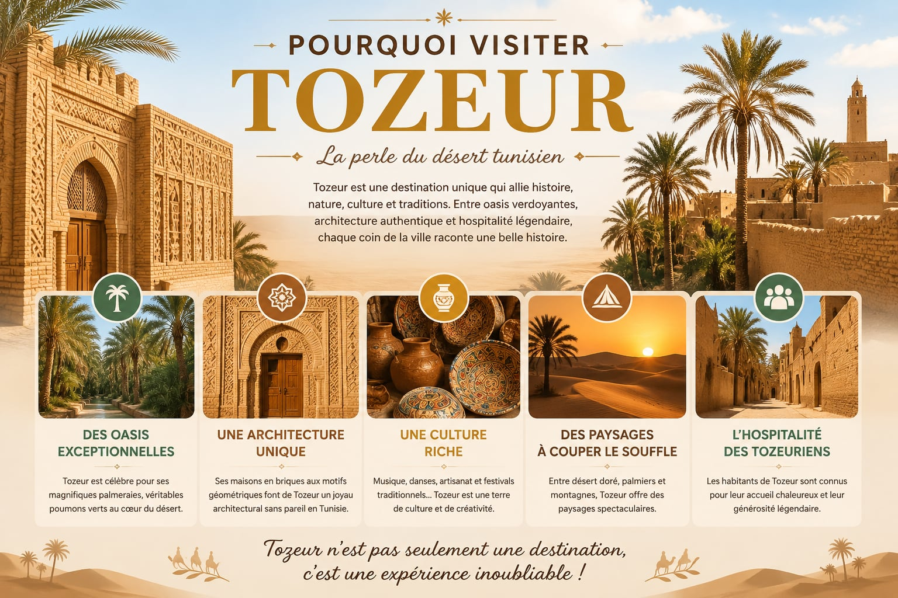
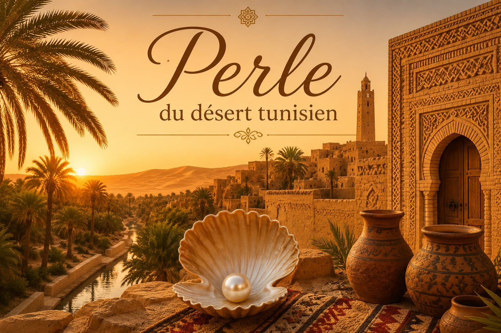
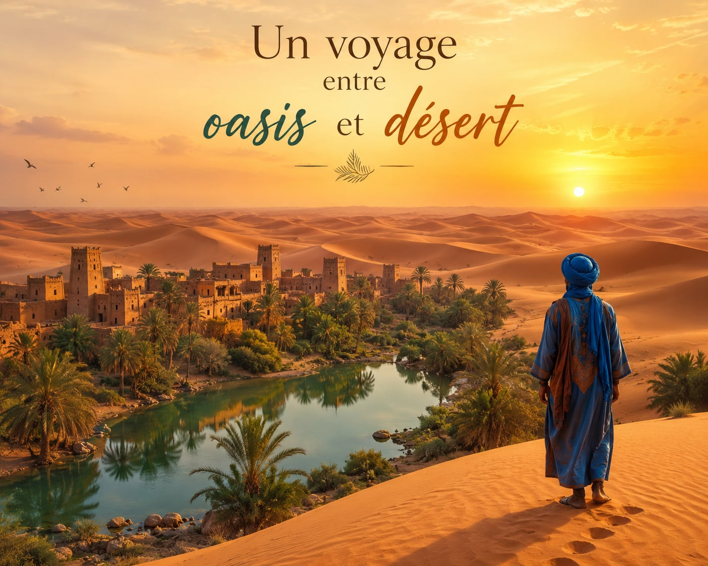
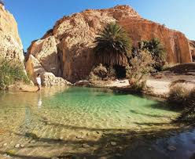
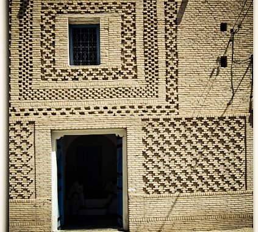
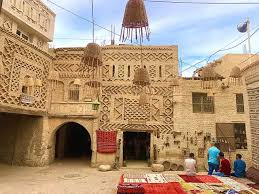

Située au sud-ouest de la Tunisie, Tozeur est une ville connue pour son patrimoine riche, ses oasis magnifiques et son architecture unique. Cette région reflète l’histoire, la culture et les traditions tunisiennes à travers ses monuments, ses festivals et son artisanat traditionnel

Visiter Tozeur, c’est découvrir une ville unique au cœur du désert tunisien. Connue pour ses magnifiques oasis, son architecture traditionnelle en briques décorées et ses paysages spectaculaires, Tozeur offre une expérience riche en culture et en traditions. Entre histoire, artisanat, hospitalité et nature, cette ville représente l’un des plus beaux patrimoines de la Tunisie

Tozeur est appelée la perle du désert tunisien grâce à son oasis magnifique, ses palmiers et ses paysages sahariens uniques. Située aux portes du Sahara, cette ville charme les visiteurs par sa beauté naturelle, son architecture traditionnelle et l’atmosphère paisible du désert.

Entre les dunes dorées et les palmiers verdoyants, ce voyage invite à découvrir la magie des oasis au cœur du désert. Un paysage où le silence des sables rencontre la fraîcheur de l’eau, offrant une expérience unique entre aventure, sérénité et émerveillement.



Tozeur se situe au sud-ouest de la Tunisie 🌴